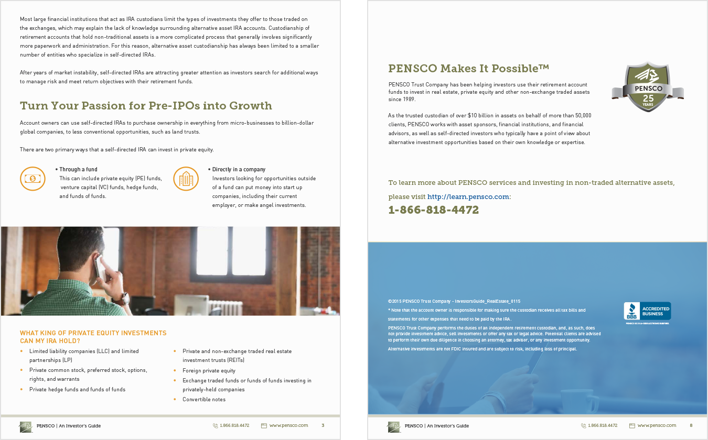
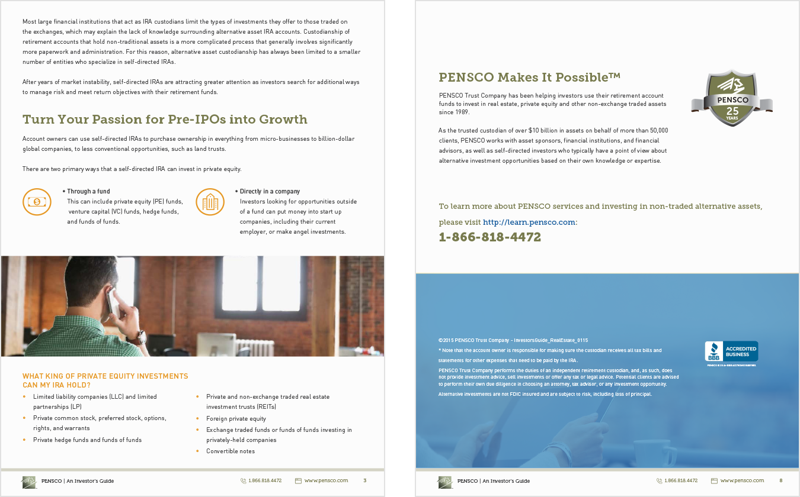

Lotame eBook Graphics
Let’s be honest, an ebook about data management platforms is not the most interesting subject matter in the world. Thats where I come in — to add the design flair and reader flow that keeps people engaged. In collaboration with Lotame’s copywriters, I created numerous graphs and illustrations to better communicate some of the data-heavy topics while tying in the themes of sports and teamwork present in the overall brand campaign. By breaking down information into understandable graphics, I was able to increase Lotame’s reader engagement and elevate their ebook library.
 
